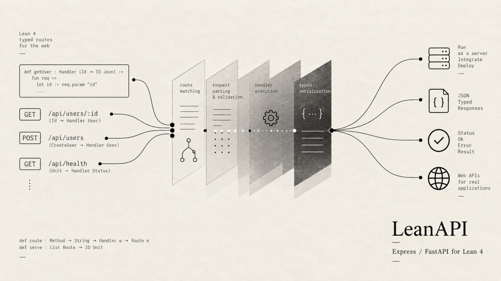

LeanAPI: An API server for Lean 4
Introducing LeanAPI v0.1, an api server for your applications written in Lean 4. Think of it as Express/FastAPI equivalent. Includes all the usual stuff, routing, middlewares, auth and headers.

Enjoy!

Introducing LeanAPI v0.1, an api server for your applications written in Lean 4. Think of it as Express/FastAPI equivalent. Includes all the usual stuff, routing, middlewares, auth and headers.

Enjoy!